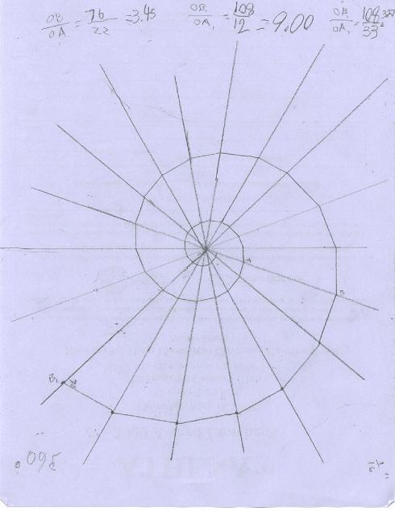
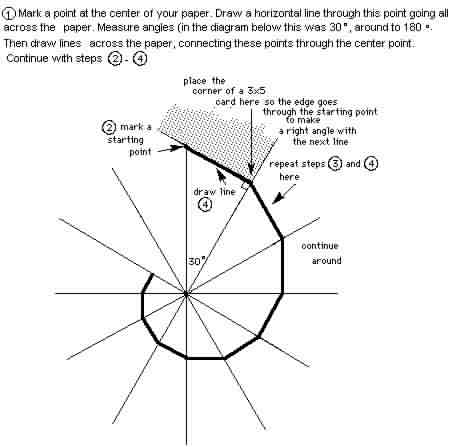
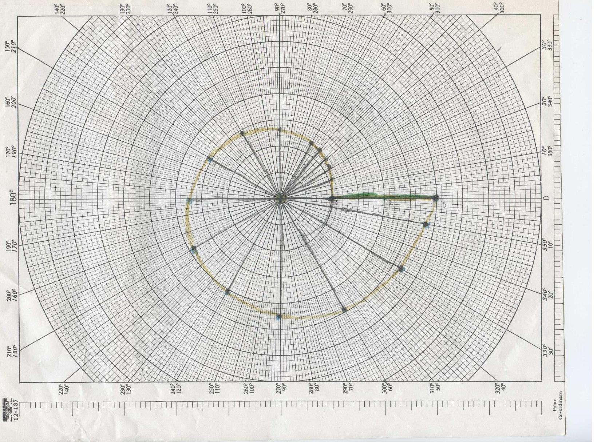

Making a Spiral
The first spiral was made by 3rd grader Chris Y . He made 20' angles around the center, ending up with a 70' spiral. The Nautilus is a spiral of about 79.5'. He found ratios of the radius vectors (from the center O, to points on the curve (almost) that are 360' apart) OB1/OA1 = 3.20 and OB/OA = 3.45. This is a measure of the growth of the Nautilus. Frank Land in "The Language of Mathematics" gives this value of 3.2 for the Nautilus shell. For 2 times around Chris found the growth to be 9.00.
Directions to make a spiral this way is shown near the bottom of this page.

The second spiral was made by SarahP.
Fine job Chris and Sarah!
Directions to make the spirals:

This graph above was done in Mathematica. Notice that when it goes from 1 on the x-axis, counterclockwise 360' it hits the x-axis again at 3.2. This shows that its growth in 2D is 3.2 times in 360', and is always that.
Alex plotted the Nautilus on polar graph paper below. It didn't quite get to 3.2 after 360' because we only used 2-digit accuracy in the equation r = e^(.18*theta).
